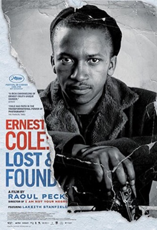

About the film

One of the first Black freelance photographers in South Africa, whose early pictures, shocking at the time of their first publication, Ernest Cole revealed to the world Black life under apartheid. Cole fled South Africa in 1966 and lived in exile in the U.S., where he photographed extensively in New York City and the American South, fascinated by the ways this country could be at times so vastly different, and at others eerily similar, to the segregated culture of his homeland. After his death, more than 60,000 of his 35mm film negatives were inexplicably discovered in a bank vault in Stockholm. Telling his own story through his writings, the recollections of those closest to him, and the lens of his uncompromising work, the film is a reintroduction of a pivotal Black artist to a new generation.
At the festival
- 2024 Spotlight · Saturday, November 9, 2024 · 6:30 PM · The Johns Hopkins University Bloomberg Center (Theater)Followed by post-screening discussion with Oscar-nominated director/writer/producer Raoul Peck, moderated by Sig Libowitz of JHU AAP Graduate Film and Media Program.
More films on these topics
 KhartoumIbrahim Snoopy Ahmad, Timeea Mohamed Ahmed, Rawia Alhag2025 · 82 min
KhartoumIbrahim Snoopy Ahmad, Timeea Mohamed Ahmed, Rawia Alhag2025 · 82 min The Rape of Recy TaylorNancy Buirski2017 · 91 min
The Rape of Recy TaylorNancy Buirski2017 · 91 min A Month in MinnesotaAnnie Sundberg2026 · 40 min
A Month in MinnesotaAnnie Sundberg2026 · 40 min- An Unknown SubstanceSteven Leckart2026 · 39 min
 Free Joan LittleYoruba Richen2026 · 36 min
Free Joan LittleYoruba Richen2026 · 36 min My NDAJuliane Dressner, Miriam Shor2026 · 101 min
My NDAJuliane Dressner, Miriam Shor2026 · 101 min